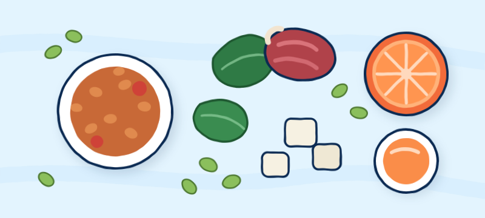
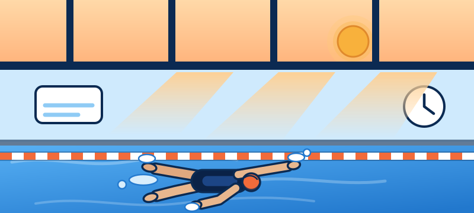

Section three
Vitamins & minerals
Female swimmers sit at the intersection of three things that drain micronutrients: high training volume, monthly blood loss, and a sport that gives you no bone loading at all. These are the nutrients worth knowing about, why swimming specifically raises the risk, and what to do with food.
The most common deficiency in female athletes
of women aged 15–49 worldwide are anaemic — the single most common nutritional deficiency on the planet, and it lands overwhelmingly on women.
WHO, 2019of female athletes are iron deficient in published studies, against roughly 3–11% of male athletes.
Sports nutrition reviewsmilligrams of iron a day — the recommended intake for women aged 19–50 compared with men. Girls aged 14–18 need 15 mg.
NIH Office of Dietary SupplementsIron needs can run up to about 70% higher in endurance athletes — so a training swimmer's target sits above the number on the packet.
ACSM / AND joint position standwomen report heavy periods. A single heavy cycle can cost more iron than several days of good eating replaces.
Menstrual health surveysmicrograms per litre of ferritin is a common cut-off for low iron stores in athletes — reachable while your haemoglobin still reads normal.
Common athlete thresholdWhy swimmers run low
- Menstrual blood loss is the largest single contributor, and it recurs every month regardless of how well you eat.
- Heavy training raises iron turnover and can cause mild inflammation that temporarily reduces how much iron you absorb from food.
- Growth increases requirements further for younger swimmers, on top of everything above.
- Iron carries oxygen in your blood. Low stores show up in the pool before they show up in a mirror.
What low iron feels like
- Fatigue beyond what the training explains, especially a heaviness that doesn't lift after a rest day.
- Feeling flat in the water session after session; times drifting with no change in effort.
- Breathlessness at paces that used to feel easy, and a higher heart rate for the same set.
- Poor recovery between sessions, pale skin, cold hands, or dizziness on standing.
Common signs, at a glance
- Unusual tiredness
- Breathless on easy sets
- Heart racing at low effort
- Pale skin, gums or inner eyelids
- Always cold — hands and feet
- Dizzy standing up
- Headaches
- Brittle or spoon-shaped nails
- Hair shedding
- Restless legs at night
- Sore or swollen tongue
- Craving ice or non-foods
- Getting ill more often
- Slow recovery between sessions
Low iron burns through your glycogen faster
Iron does more than colour your blood. It sits inside haemoglobin, which carries oxygen to your muscles; inside myoglobin, which stores it there; and inside the iron-containing enzymes of the electron transport chain, which is the machinery that lets a muscle produce energy aerobically. Take iron away and every one of those steps gets weaker.
The result is that your muscles can't lean on oxygen as much, so they lean on anaerobic glycolysis instead — the fast pathway that runs on stored carbohydrate. That pathway burns muscle glycogen quickly and produces more lactate for the same effort. In practice:
- The same pace costs you more carbohydrate and more glycogen than it would with normal iron stores.
- You hit the wall earlier in the session — the last third of a long aerobic set is usually where it shows first.
- Lactate climbs sooner, so repeats feel harder and take longer to come back from.
- You recover worse between doubles, because you started the second session already depleted.
This is why fuelling matters more, not less, when your iron is low. You are running a less efficient engine on a fuel tank that empties faster, so the carbohydrate you eat before and after training is doing more work than it would for someone with full stores. Skipping breakfast before a 5am session or riding out a long set on water is costly for anyone; if you are iron deficient it is the difference between finishing the set and falling off it.
Fuelling well does not fix low iron — only finding the cause and correcting it does. But under-fuelling on top of low iron stacks two problems that each make the other worse. See the training day for what to eat around sessions, and competition day for race mornings.

Food sources, and how to make them absorb
- Heme iron (absorbed best): red meat, lamb, liver, dark poultry meat, sardines, oysters, mussels.
- Non-heme iron (plant sources, absorbed less well): lentils, chickpeas, beans, tofu, pumpkin seeds, spinach, fortified breakfast cereal, blackstrap molasses.
- Pair plant iron with vitamin C. Orange juice, strawberries, kiwi, peppers, tomatoes, or broccoli in the same meal can substantially increase absorption. Lentils with tomato, cereal with orange juice, tofu with peppers.
- Keep tea and coffee away from iron-rich meals. Tannins bind iron and cut absorption sharply — leave about an hour on either side.
- Calcium competes with iron for absorption, so a large dairy serving in the same meal as your main iron source is not ideal. Spread them across the day.
- Cooking in cast iron adds a small amount of usable iron, particularly with acidic foods.
Get tested before you supplement. Ask a doctor for ferritin alongside a full blood count if you have unexplained fatigue. Iron supplements are genuinely useful when you are deficient and genuinely harmful when you are not — excess iron accumulates and damages organs. Guessing in either direction is a bad idea.
Calcium and vitamin D
Why this matters more in swimming than in most sports
Swimming is non-weight-bearing. Running, jumping, and lifting all signal bone to get denser; floating does not. Swimmers have been shown to have lower bone mineral density than athletes in impact sports, which means bone health has to come from nutrition and dryland rather than from the sport itself.
- Adolescence is when most of your lifetime bone density is built. It is a window that does not reopen.
- Low energy availability and disrupted periods both reduce oestrogen, which accelerates bone loss — so under-fuelling and bone health are directly linked.
- Weight-bearing dryland — jumping, hopping, and resistance training — is the training-side half of this. Nutrition is the other half.
Food sources
- Dairy: milk, yoghurt, cheese — the most concentrated and best-absorbed sources.
- Fortified plant milks (shake the carton; the calcium settles), fortified orange juice.
- Calcium-set tofu, tinned sardines and salmon with the bones, almonds, tahini, chia.
- Leafy greens: kale, bok choy, broccoli. Spinach contains calcium but binds most of it, so it counts for less than it looks.
- Spread intake across the day — you absorb calcium better in several moderate servings than in one large one.

The one indoor athletes miss
- Vitamin D is what lets you absorb the calcium you eat. Without enough, high calcium intake still leaves bone short.
- Indoor pool athletes are frequently low — you train before sunrise and after sunset, indoors, for months at a time.
- Food sources are limited: oily fish (salmon, mackerel, sardines), egg yolks, fortified milk and cereal, UV-exposed mushrooms.
- Sunlight is the main natural source, and it is unreliable in winter, at higher latitudes, and for anyone with darker skin.
- This is one worth having tested, and one where a doctor may reasonably recommend a supplement — a common and well-tolerated one.
B vitamins, magnesium and zinc
Red blood cells
- Both are needed to build red blood cells, which makes them the natural partners to iron — you can be tired from low B12 with perfectly adequate iron.
- B12: meat, fish, eggs, dairy, fortified cereals and nutritional yeast.
- B12 needs deliberate attention on a plant-based diet; it is not reliably available from unfortified plant foods, and a supplement is standard advice for vegans.
- Folate: leafy greens, legumes, citrus, fortified grains.
Turning food into energy
- These vitamins run the pathways that convert carbohydrate and fat into usable energy, so requirements rise with training volume.
- Intake usually rises naturally with food intake — which is another reason under-eating costs you more than calories.
- Sources: whole grains, eggs, dairy, meat, fish, legumes, seeds, fortified cereals.
Muscle function and sleep
- Involved in muscle contraction, energy production, and bone structure; heavy sweating increases losses.
- Sources: pumpkin seeds, almonds, cashews, dark chocolate, black beans, whole grains, spinach, avocado.
- Chronic cramping is more often fluid and sodium than magnesium, but persistently low intake is worth fixing regardless.
Immunity and repair
- Supports immune function and tissue repair; losses rise with sweat and training load, which is part of why heavy blocks come with more colds.
- Sources: meat, shellfish, dairy, legumes, pumpkin and hemp seeds, whole grains.
- High-dose zinc supplements interfere with copper and iron absorption — food first.
Not a vitamin, still worth knowing
- Supports the inflammatory response you rely on to adapt to training, plus general cardiovascular and brain health.
- Sources: salmon, mackerel, sardines, walnuts, chia, flax, algae oil.
- Two portions of oily fish a week covers most people without any supplement.
The mineral swimmers forget
- You do sweat in the pool. You just cannot see it, which is why swimmers reliably under-drink and under-salt.
- Sodium is what lets you hold onto the fluid you drink; plain water after a heavy session can leave you drinking a lot and retaining little.
- Salty sweaters — white marks on skin or kit — need more, especially on long meet days and in warm venues.
Reading the small signs
Deficiencies rarely announce themselves. They show up as vague, easy-to-dismiss things — being tired, being cold, bruising, a mouth that keeps splitting at the corners. None of these prove anything on their own, and all of them have other explanations. What matters is a sign that persists for weeks, or several appearing together. That is the point to stop guessing and ask for a blood test.
Tired in a way rest doesn't fix
Pale skin, breathlessness on easy sets, cold hands, dizziness standing up, hair shedding, brittle nails, restless legs, and — oddly specific but genuinely common — a craving to chew ice.
Most likely of all of these in female swimmers. Full section above.
Aching bones and winter colds
Deep muscle aches, bone tenderness (shins, hips, ribs), low mood through winter, and catching everything going round. Stress fractures are the serious end.
Indoor training before sunrise and after sunset is the whole problem — you can eat well and still be low.
Tired, plus something neurological
Fatigue that looks exactly like low iron, but with pins and needles in hands or feet, a sore or beefy-red tongue, mouth ulcers, poor balance, or foggy concentration.
The single biggest risk factor is a vegan or near-vegan diet without a supplement or fortified foods.
Twitches, cramps, broken sleep
Eyelid or calf twitching, night cramps, trouble getting to sleep, irritability. Heavy sweating over a long block increases losses.
Cramp is more often fluid and sodium than magnesium — check the simple explanation first.
Every bug in the pool finds you
Repeated colds, cuts and grazes that take too long to close, appetite dropping off, taste or smell going flat, skin breaking out.
Turns up most in heavy training blocks and in swimmers eating little meat or seafood.
Bruises and slow-healing gums
Bruising from knocks you barely noticed, gums bleeding when you brush, cuts healing slowly, rough bumpy skin on the backs of the arms.
Worth knowing for a second reason: vitamin C is what makes plant iron absorb. Low intake quietly makes an iron problem worse.
The thyroid pair
Persistent cold intolerance, unexplained weight change, dry skin, hair thinning, and a flatness that no amount of taper shifts.
Rare, but rises with dairy-free and fish-free diets, since those are the main sources in most countries.
Silent until it isn't
Low calcium has almost no day-to-day symptoms — the cost is paid years later in bone density. Occasionally: cramping, numb or tingling fingers, weak nails.
In a non-weight-bearing sport this is one to get right on intake rather than wait for signs. See the bone section.
See a doctor promptly if you notice any of these
- Periods stopping or becoming irregular
- Fatigue lasting more than a few weeks
- Repeated stress fractures
- Fainting or near-fainting
- Chest pain or a racing heart at rest
- Unexplained weight loss
- Heavy periods soaking through hourly
- Pins and needles that don't settle
- Performance dropping over a whole season
One test answers most of this. A full blood count with ferritin, vitamin D, and B12 covers the deficiencies female swimmers actually get, and it is a routine request. Ask for the numbers themselves rather than just "normal" — ferritin in particular can sit inside the reference range and still be too low for someone training twice a day.
RED-S: when the whole system runs short
Relative Energy Deficiency in Sport
RED-S happens when energy intake doesn't cover the demands of training plus everything your body needs to simply run. It is not the same as an eating disorder, and it does not require intentional restriction — a heavy training block with an unchanged appetite is enough to cause it. It is common in swimming, where volume is high and appetite often lags behind need.
- Signs to take seriously: periods becoming irregular, lighter, or stopping · persistent fatigue that rest doesn't fix · repeated illness · stress fractures or nagging injuries · performance sliding despite good training · low mood, anxiety, or irritability · feeling cold constantly · disrupted sleep.
- It affects more than performance. Bone density, hormonal health, metabolism, immune function, mental health, and cardiovascular health are all involved.
- Losing your period is not a normal consequence of training hard. It is one of the clearest signals your body sends that energy intake is too low, and it should always be investigated rather than accepted.
- What to do: speak to a doctor and, if you can, a registered sports dietitian. This is not a "tweak your diet at home" situation. Early attention makes a genuine difference, particularly to bone.
The short version of this whole page: eat enough, eat varied, and get iron and vitamin D checked rather than guessed. Most micronutrient problems in swimmers trace back to either not enough total food or a specific, testable gap — and both have straightforward answers once someone actually looks.
This page is educational and not medical advice. Do not start iron or any other supplement without testing and a clinician's input, and check anything you take against your federation's anti-doping rules. If you notice missed periods, unexplained fatigue, or repeated injuries, see a doctor promptly.